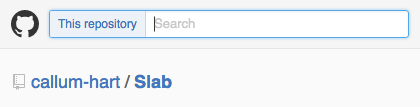
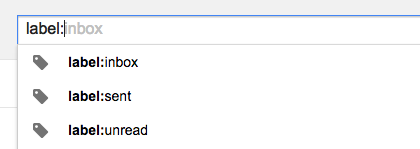
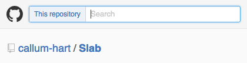
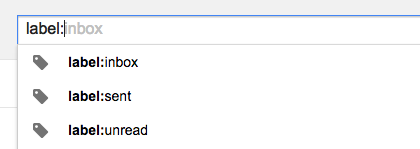
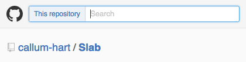
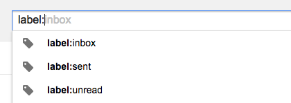
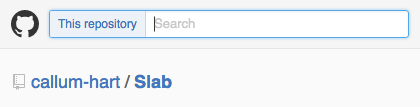
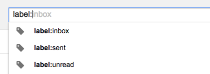

Example
 





Ever used search in amazon, github or gmail? Yes – great you'll know what's to come. No – even better you can say you saw it here first!
Let's take a look:


As you can see they differ from regular text inputs as they accept two values. The first value acts as a filter and the second value is the search query.
This is Slab in a nutshell – a JavaScript component that handles search filters and queries.
The library can be found on GitHub as can the documentation.
And some examples can be seen below:
Big thanks to CommuSoft where I built version 0.1.0
<div id="amazon-example"></div>
// shopCategories saved to window variable so it's available in your console.
window.shopCategories = shopCategories;
amazonExample = new Slab("#amazon-example", {
withButton: true,
tabToSearchContent: "Hit tab to shop",
firstComplete: {
data: shopCategories,
suggestResult: true,
selectedKey: "aps"
},
secondComplete: {
data: [],
noResultsText: "No recent searches for"
}
});
<div id="gmail-example"></div>
// gmailFilters & recentSearches saved to window variables so they're available in your console.
window.gmailFilters = gmailFilters;
window.recentSearches = recentSearches;
gmailExample = new Slab("#gmail-example", {
firstComplete: {
data: gmailFilters,
suggestResult: true
},
secondComplete: {
data: recentSearches,
suggestResult: yes,
canAddNewRecords: true,
noResultsText: "No recent searches match"
}
});